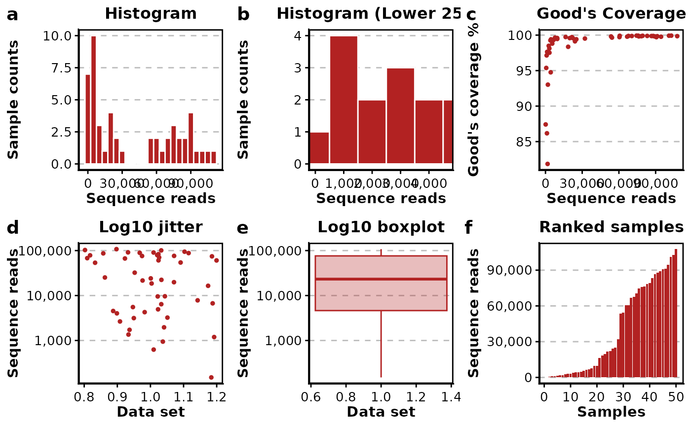
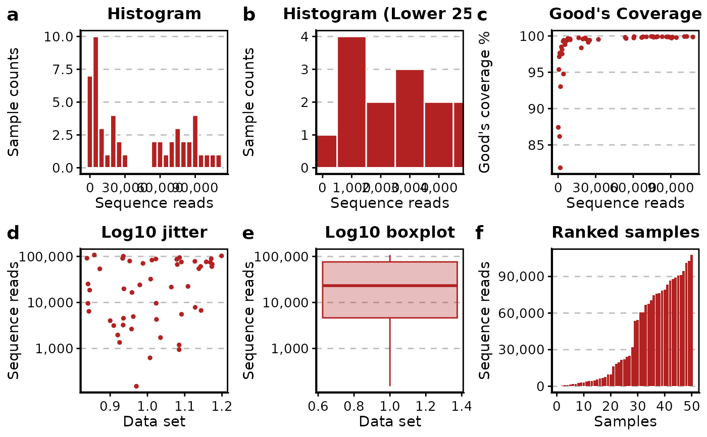

This function creates a 6-panel diagnostic plot showing sequencing depth,
Good's coverage, and outlier behavior based on a data frame or a
phyloseq object with rare stats already added via add_rare_stats().
Examples
# \donttest{
library(phyloseq)
library(BRCore)
data("bcse", package = "BRCore")
# Add rarefaction metrics to the phyloseq object
bcse_metrics <- add_rarefaction_metrics(bcse)
# Plot the rarefaction diagnostics
plot_rarefaction_metrics(bcse_metrics)
#> ℹ Processing 50 samples
#> ℹ Generating rarefaction diagnostic plots
#> ✔ Rarefaction diagnostic plots generated successfully
#> ℹ Generating rarefaction diagnostic plots
#> ✔ Generating rarefaction diagnostic plots [805ms]
#>

# You can also pass a data frame directly if you have
# pre-computed read_num, goods_cov, and outlier columns
sample_data_df <- data.frame(sample_data(bcse_metrics))
plot_rarefaction_metrics(sample_data_df)
#> ℹ Processing 50 samples
#> ℹ Generating rarefaction diagnostic plots
#> ✔ Rarefaction diagnostic plots generated successfully
#> ℹ Generating rarefaction diagnostic plots
#> ✔ Generating rarefaction diagnostic plots [778ms]
#>

# }